Por que o plástico é um problema?
Toneladas de plástico chegam aos mares todos os anos. Com o tempo, esses resíduos se fragmentam em microplásticos, contaminando peixes, água e até o sal marinho. Além disso, animais marinhos ficam presos ou ingerem plásticos, colocando espécies inteiras em risco.
A solução envolve responsabilidade compartilhada entre empresas, governos e consumidores por meio de reciclagem, coleta seletiva, leis ambientais e redução do plástico descartável.
Galeria de Imagens

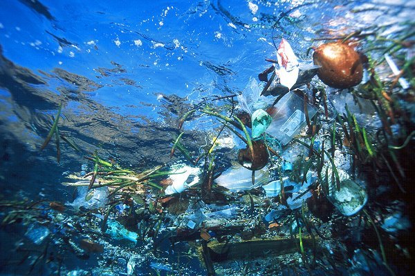
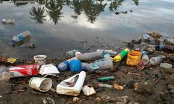
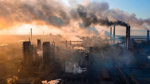


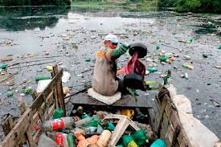

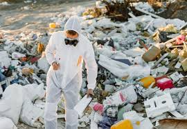

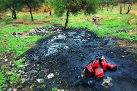
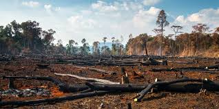
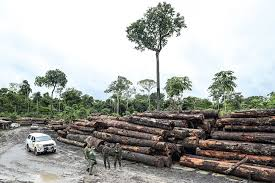

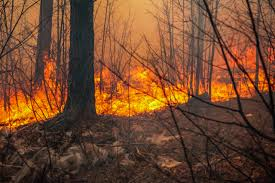

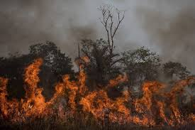
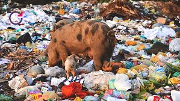
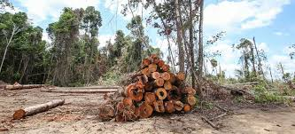
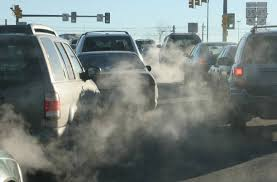
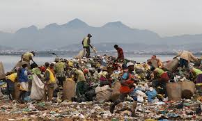